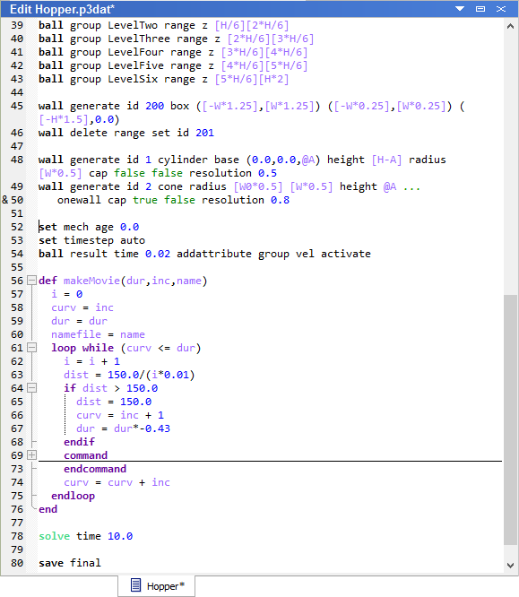

编辑器窗格局部选项
在 编辑器 窗格内，可从 工具栏（toolbar） 关闭或开启下列选项，其影响仅限该窗格。相同的选项也出现在 选项 对话框（dialog） 的 编辑器 部分中。在那里所做的选择将用作任何新 编辑器 窗格的默认值。
行号


图 1：编辑器窗格中的局部选项：行号（左侧）；代码折叠（第 69 行）；缩进参考线（第 65-67 行）；语法高亮（全文）；自动换行（第 45 或 48 行）与行续接（第 49 和 50 行）的对比。单击可在单独窗口中放大。
局部选项 按钮（）上的此开关用于开启/关闭行号。使用行号时，行号显示在窗格左侧的边栏中。行号的各个方面在相邻图像中加以说明。
- 当行号前面带有“&”时，表示该行是其上一行的续接。
- 行号后面的带方框加号表示一个代码折叠区域（见下文）。此类衔接处的行号将标示折叠的起始（带加号的那一行），而行号中显示的下一个行号将是该折叠中最后一行的行号。
- 当自动换行关闭时（见下文），行号之间不会显示任何间隙。
- 当从一个行号到下一个行号之间出现间隙时，表示自动换行已开启。该间隙本身表示所换行行的范围。
代码折叠
当此选项开启时，命令或 FISH 语法中任何以起点和终点界定的部分都可以折叠。
- 折叠代码：按带方框的减号（）
- 展开代码：按带方框的加号（）
折叠可以嵌套，可折叠区域通常出现在其它可折叠区域之内。位于另一个可折叠区域内的可折叠区域，其终点由一个小短横（）标示。最外层可折叠区域的终点由一个卷曲符号（）标示。在 编辑器 中，折叠区域的起始行与结束行之间将绘制一条与窗格窗口等宽的水平线。
缩进参考线
缩进参考线是点状竖线，出现在它们所标示的行的左侧起始点处，用于指示已应用于该行的缩进级别。
语法高亮
当此选项“开启”时，语法将根据 选项（Options） 对话框中的设置按颜色和字体粗细进行格式化。若“关闭”，文本为黑色。
自动换行
开启或关闭按行换行。当“开启”时，长于所在窗格当前宽度的行将被换行。
| 这些内容对您有帮助吗？… | FLAC3D © 2019, Itasca | 原文更新于 2020 年 10 月 8 日 |